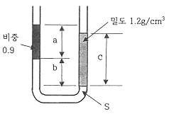
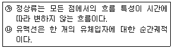
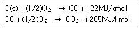
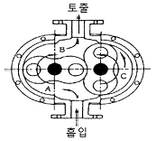
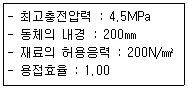
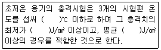

가스기사 (2015-05-31 기출문제)
1과목: 가스유체역학
1. 그림과 같이 U자관에 세 액체가 평형상태에 있다. a＝30㎝, b＝15㎝, c＝40㎝일 때, 비중 S는 얼마인가?

- 1.0
- 1.2
- 1.4
- 1.6
(정답률: 53%)

2. 일반적으로 다음 장치에 발생하는 압력차가 작은 것부터 큰 순서대로 옳게 나열한 것은?
- 송풍기＜팬＜압축기
- 압축기＜팬＜송풍기
- 팬＜송풍기＜압축기
- 송풍기＜압축기＜팬
(정답률: 87%)
3. 25℃에서 비열비가 1.4인 공기가 이상기체라면, 이 공기의 실제속도가 458m/s일 때 마하수는 얼마인가? (단, 공기의 평균분자량은 29로 한다.)
- 1.25
- 1.32
- 1.42
- 1.49
(정답률: 59%)
4. 다음 중 등엔트로피 과정은?
- 가역 단열 과정
- 비가역 등온 과정
- 수축과 확대 과정
- 마찰이 있는 가역적 과정
(정답률: 87%)
5. 비열비가 1.2이고 기체상수가 200J/㎏·K인 기체에서의 음속이 400m/s이다. 이때 기체의 온도는 약 얼마인가?
- 253℃
- 394℃
- 520℃
- 667℃
(정답률: 61%)
6. 개방된 탱크에 물이 채워져 있다. 수면에서 2m깊이의 지점에서 받는 절대압력은 몇 ㎏f/cm2인가?
- 0.03
- 1.033
- 1.23
- 1.92
(정답률: 60%)
7. 유체에 잠겨 있는 곡면에 작용하는 전압력의 수평분력에 대한 설명으로 다음 중 가장 올바른 것은?
- 전압력의 수평성분 방향에 수직인 연직면에 투영한 투영면의 압력중심의 압력과 투영면을 곱한 값과 같다.
- 전압력의 수평성분 방향에 수직인 연직면에 투영한 투영면의 도심의 압력과 곡면의 면적을 곱한 값과 같다.
- 수평면에 투영한 투영면에 작용하는 전압력과 같다.
- 전압력의 수평성분 방향에 수직인 연직면에 투영한 투영면의 도심의 압력과 투영면의 면적을 곱한 값과 같다.
(정답률: 63%)
8. 공기 압축기의 입구 온도는 21℃ 이며 대기압 상태에서 공기를 흡입하고, 절대압력 359kPa, 38.6℃로 압축하여 송출구로 평균속도 30m/s, 질량유량 10㎏/s로 배출한다. 압축기에 가해진 압력 동력이 450kW이고, 입구 측의 흡입속도를 무시하면 압축기에서의 열전달량은 몇 kW인가? (단, 정압비열 Cp＝1000·[J/(㎏·K)]이다.)
- 270 kW로 열이 압축기로부터 방출된다.
- 450 kW로 열이 압축기로부터 방출된다.
- 270 kW로 열이 압축기로부터 흡수된다.
- 450 kW로 열이 압축기로부터 흡수된다.
(정답률: 50%)
9. 다음 중 옳은 설명을 모두 나타낸 것은?

- ㉮
- ㉯
- ㉮, ㉯
- 모두 틀림
(정답률: 52%)
10. 아음속 등엔트로피 흐름의 축소-확대 노즐에서 확대되는 부분에서의 변화로 옳은 것은?
- 속도는 증가하고, 밀도는 감소한다.
- 압력 및 밀도는 감소한다.
- 속도 및 밀도는 증가한다.
- 압력은 증가하고, 속도는 감소한다.
(정답률: 74%)
11. 점성계수의 차원을 질량(M), 길이(L), 시간(T)으로 나타내면?
- ML-1T-1
- ML-2T
- ML-1T2
- ML-2
(정답률: 76%)
12. 초음속 흐름인 확대관에서 감소하지 않는 것은? (단, 등엔트로피 과정이다.)
- 압력
- 온도
- 속도
- 밀도
(정답률: 73%)
13. 질량 보존의 법칙을 유체유동에 적용한 방정식은?
- 오일러 방정식
- 달시 방정식
- 운동량 방정식
- 연속 방정식
(정답률: 75%)
14. 관로의 유동에서 각각의 경우에 대한 손실수두를 나타낸 것이다. 이 중 틀린 것은? (단, f : 마찰계수, d : 관의 지름, V2/2g : 속도수두, Rh : 수력반지름, k : 손실계수, L : 관의 길이, A관의 단면적, Cc : 단면적 축소계수이다.)
- 원형관 속의 손실수두 :

- 비원형관 속의 손실수두 :

- 돌연 확대관 손실수두 :

- 돌연 축소관 손실수두 :

(정답률: 61%)
15. 압축성 유체의 1차원 유동에서 수직충격파 구간을 지나는 기체의 성질의 변화로 옳은 것은?
- 속도, 압력, 밀도가 증가한다.
- 속도, 온도, 밀도가 증가한다.
- 압력, 밀도, 온도가 증가한다.
- 압력, 밀도, 단위시간당 운동량이 증가한다.
(정답률: 79%)
16. 원심펌프의 공동현상 발생의 원인으로 다음 중 가장 거리가 먼 것은?
- 과속으로 유량이 증대될 때
- 관로내의 온도가 상승할 때
- 흡입양정이 길 때
- 흡입의 마찰저항이 감소할 때
(정답률: 70%)
17. 층류와 난류에 대한 설명으로 틀린 것은?
- 층류는 유체입자가 층을 형성하여 질서정연하게 흐른다.
- 곧은 원관 속의 흐름이 층류일 때 전단응력은 원관의 중심에서 0이 된다.
- 난류유동에서의 전단응력은 일반적으로 층류유동보다 작다.
- 난류운동에서 마찰저항의 특징은 점성계수의 영향을 받는다.
(정답률: 72%)
18. 관에서의 마찰계수 f에 대한 일반적인 설명으로 옳은 것은?
- 레이놀즈수와 상대조도의 함수이다.
- 마하수의 함수이다.
- 점성력과는 관계가 없다.
- 관성력만의 함수이다.
(정답률: 88%)
19. 다음 중 유적선(path line)을 가장 옳게 설명한 것은?
- 곡선의 접선방향과 그 점의 속도 방향이 일치하는 선
- 속도벡터의 방향을 갖는 연속적인 가상의 선
- 유체입자가 주어진 시간동안 통과한 경로
- 모든 유체입자의 순간적인 궤적
(정답률: 50%)
20. 펌프의 흡입압력이 유체의 증기압보다 낮을 때 유체 내부에서 기포가 발생하는 현상을 무엇이라고 하는가?
- 캐비테이션
- 수격현상
- 서징현상
- 에어바인딩
(정답률: 78%)
2과목: 연소공학
21. 프로판과 부탄의 체적비가 40 : 60인 혼합가스 10m3를 완전 연소하는데 필요한 이론 공기량은 몇 m3인가? (단, 공기의 체적비는 산소 : 질소＝21:79이다.)
- 95.2
- 181.0
- 2⑤.6
- 281
(정답률: 51%)
22. 2.5㎏의 이상기체를 0.15MPa, 15℃에서 체적이 0.2m3가 될 때까지 등온 압축할 때 압축 후의 압력은 약 몇 MPa인가? (단, 이상기체의 Cp＝0.8kJ/㎏·K, Cv＝0.5kJ/㎏·K이다.)
- 0.98
- 1.09
- 1.23
- 1.37
(정답률: 44%)
23. C(s)가 완전 연소하여 CO2(g)가 될 때의 연소열(MJ/kmol)은 얼마인가?

- 407
- 330
- 223
- 141
(정답률: 71%)
24. 기체연료의 연소형태에 해당하는 것은?
- 확산연소, 증발연소
- 예혼합연소, 증발연소
- 예혼합연소, 확산연소
- 예혼합연소, 분해연소
(정답률: 85%)
25. 액체연료가 증발하여 증기를 형성한 후 증기와 공기가 혼합하여 연소하는 과정에 대한 설명으로 옳은 것은?
- 주로 공업적으로 연소시킬 때 이용된다.
- 이 전체 과정을 확산(Diffusion)연소라 한다.
- 예혼합기연소에 비해 반응대가 넓고, 탄화수소연료에서는 Soot를 생성한다.
- 이 과정에서 연료의 증발속도가 연소의 속도보다 빠른 경우 불완전연소가 된다.
(정답률: 68%)
26. 가스폭발 원인으로 착용하는 점화원이 아닌 것은?
- 정전기 불꽃
- 압축열
- 기화열
- 마찰열
(정답률: 71%)
27. 소화안전전장치(화염감시장치)의 종류가 아닌 것은?
- 열전대식
- 플래임 로드식
- 자외선 광전관식
- 방사선식
(정답률: 64%)
28. 오토사이클(Otto cycle)의 선도에서 정적가열 과정은?
- 1 → 2
- 2 → 3
- 3 → 4
- 4 → 1
(정답률: 66%)
29. 불완전 연소의 원인으로 틀린 것은?
- 배기가스의 배출이 불량할 때
- 공기와의 접촉 및 혼합이 불충분할 때
- 과대한 가스량 혹은 필요량의 공기가 없을 때
- 불꽃이 고온 물체에 접촉되어 온도가 올라갈 때
(정답률: 78%)
30. 착화온도가 낮아지는 조건으로 틀린 것은?
- 산소농도가 클수록
- 발열량이 높을수록
- 반응활성도가 클수록
- 분자구조가 간단할수록
(정답률: 77%)
31. 다음 중 열역학 제 0 법칙에 대하여 설명한 것은?
- 저온체에서 고온체로 아무 일도 없이 열을 전달할 수 없다.
- 절대온도 0 에서 모든 완전 결정체의 절대 엔트로피의 값은 0이다.
- 기계가 일을 하기 위해서는 반드시 다른 에너지를 소비해야 하고 어떤 에너지도 소비하지 않고 계속 일을 하는 기계는 존재하지 않는다.
- 온도가 서로 다른 물체를 접촉시키면 높은 온도를 지닌 물체의 온도는 내려가고, 낮은 온도를 지닌 물체의 온도는 올라가서 두 물체의 온도 차이는 없어진다.
(정답률: 79%)
32. 압력을 고압으로 할수록 공기 중에서의 폭발범위가 좁아지는 가스는?
- 일산화탄소
- 메탄
- 에틸렌
- 프로판
(정답률: 65%)
33. 저발열량이 41860kJ/㎏인 연료를 3㎏ 연소시켰을 때 연소가스의 열용량이 62.8kJ/℃였다면 이때의 이론연소 온도는 약 몇 ℃인가?
- 1000℃
- 2000℃
- 3000℃
- 4000℃
(정답률: 75%)
34. 가연성 기체의 연소에 대한 설명으로 가장 옳은 것은?
- 가연성가스는 CO2와 혼합하면 연소가 잘 된다.
- 가연성가스는 혼합한 공기가 적을수록 연소가 잘 된다.
- 가연성가스는 어떤 비율로 공기와 혼합해도 연소가 잘 된다.
- 가연성가스는 혼합한 공기와의 비율이 연소범위일 때 연소가 잘 된다.
(정답률: 82%)
35. 고발열량(高發熱量) 저발열량(低發熱量)의 값이 가장 가까운 연료는?
- LPG
- 가솔린
- 목탄
- 유연탄
(정답률: 74%)
36. 화격자 연소의 화염이동 속도에 대한 설명으로 옳은 것은?
- 발열량이 낮을수록 커진다.
- 석탄화도가 낮을수록 커진다.
- 입자의 직경이 클수록 커진다.
- 1차 공기온도가 낮을수록 커진다.
(정답률: 60%)
37. 실제 가스의 엔탈피에 대한 설명으로 틀린 것은?
- 엔트로피만의 함수이다.
- 온도와 비체적의 함수이다.
- 압력과 비체적의 함수이다.
- 온도, 질량, 압력의 함수이다.
(정답률: 61%)
38. 다음 중 역화의 가능성이 가장 큰 연소방식은?
- 전1차식
- 분젠식
- 세미분젠식
- 적화식
(정답률: 58%)
39. 다음 중 화학적 폭발과 가장 거리가 먼 것은?
- 분해
- 연소
- 파열
- 산화
(정답률: 75%)
40. 내압방폭구조의 폭발등급 분류 중 가연성 가스의 폭발 등급 A에 해당하는 최대안전 틈새의 범위(mm)는?(오류 신고가 접수된 문제입니다. 반드시 정답과 해설을 확인하시기 바랍니다.)
- 0.9 이하
- 0.5 초과, 0.9 미만
- 0.5 이하
- 0.9 이상
(정답률: 70%)
3과목: 가스설비
41. 액화 사이클의 종류가 아닌 것은?
- 클라우드식 사이클
- 린데식 사이클
- 필립스식 사이클
- 핸리식 사이클
(정답률: 68%)
42. 압축기와 적합한 윤활유 종류가 잘못 짝지어진 것은?
- 산소가스 압축기 : 유지류
- 수소가스 압축기 : 순광물유
- 메틸클로라이드 압축기 : 화이트유
- 이산화황가스 압축기 : 정제된 용제 터빈유
(정답률: 64%)
43. 다음 그림은 어떤 종류의 압축기인가?

- 가동날개식
- 루트식
- 플런저식
- 나사식
(정답률: 82%)
44. 가스미터의 설치 시 주의사항으로 틀린 것은?
- 전기개폐기 및 전기계량기로부터 60㎝ 이격시켜 설치
- 절연조치를 하지 아니한 전선으로부터 가스미터까지 15㎝ 이상 이격시켜 설치
- 가스계량기의 설치높이는 1.6~2m 이내에 수평, 수직으로 설치
- 당해 시설에 사용하는 자체 화기와 2m 이상 떨어지고 화기에 대해 차열판을 설치
(정답률: 47%)
45. 다음 중 가스의 호환성을 판정할 때 사용되는 것은?
- Reynolds수
- Webbe지수
- Nusselt수
- Mach수
(정답률: 73%)
46. 압력용기에 해당하는 것은?
- 설계압력(MPa)과 내용적(m3)을 곱한 수치가 0.03인 용기
- 완충기 및 완충장치에 속하는 용기와 자동차 에어백용 가스충전용기
- 압력에 관계없이 안지름, 폭, 길이 또는 단면의 지름이 100㎜인 용기
- 펌프, 압축장치 및 축압기의 본체와 그 본체와 분리되지 아니하는 일체형 용기
(정답률: 67%)
47. 이론적 압축일량이 큰 순서로 나열된 것은?
- 등온압축＞단열압축＞폴리트로픽압축
- 단열압축＞폴리트로픽압축＞등온압축
- 폴리트로픽압축＞등온압축＞단열압축
- 등온압축＞폴리트로픽압축＞단열압축
(정답률: 64%)
48. 고압가스 기화장치의 형식이 아닌 것은?
- 온수식
- 코일식
- 단관식
- 캐비닛형
(정답률: 52%)
49. 다음의 수치를 이용하여 고압가스용 용접용기의 동판 두께를 계산하면 얼마인가? (단, 아세틸렌용기 및 액화석유가스 용기는 아니며, 부식여유 두께는 고려하지 않는다.)

- 1.98㎜
- 2.28㎜
- 2.84㎜
- 3.45㎜
(정답률: 62%)
50. LPG 집단공급시설 및 사용시설에 설치하는 가스누출자동차단기를 설치하지 않아도 되는 것은?
- 동일 건축물 안에 있는 전체 가스사용시설의 주배관
- 체육관, 수영장, 농수산시장 등 상가와 유사한 가스사용시설
- 동일 건축물 안으로서 구분 밀폐된 2개 이상의 층에서 가스를 사용하는 경우 층별 주배관
- 동일 건축물의 동일 층 안에서 2 이상의 자가 가스를 사용하는 경우 사용자별 주배관
(정답률: 73%)
51. 관지름 50A인 SPSS가 최고 사용압력이 5MPa, 허용응력이 500N/mm2일 때 SCH No.는? (단, 안전율은 4이다.)
- 40
- 60
- 80
- 100
(정답률: 45%)
52. 다음 부취제 주입방식 중 액체식 주입방식이 아닌 것은?
- 펌프주입식
- 적하주입식
- 위크식
- 미터연결 바이패스식
(정답률: 64%)
53. 어떤 용기에 액체를 넣어 밀폐하고 에너지를 가하면 액체의 비등점은 어떻게 되는가?
- 상승한다.
- 저하한다.
- 변하지 않는다.
- 이 조건으로 알 수 없다.
(정답률: 72%)
54. 공기액화분리장치에서 반드시 제거해야 하는 물질이 아닌 것은?
- 탄산가스
- 아세틸렌
- 수분
- 질소
(정답률: 74%)
55. LP가스 판매사업의 용기보관실의 면적은?
- 9m2 이상
- 10m2 이상
- 12m2 이상
- 19m2 이상
(정답률: 58%)
56. 펌프의 이상 현상인 베이퍼록(vapor-rock)을 방지하기 위한 방법으로 가장 거리가 먼 것은?
- 흡입배관을 단열처리 한다.
- 흡입관의 지름을 크게 한다.
- 실린더 라이너의 외부를 냉각한다.
- 저장탱크와 펌프의 액면차를 충분히 작게 한다.
(정답률: 48%)
57. 흡수식 냉동기에서 냉매로 사용되는 것은?
- 암모니아, 물
- 프레온 22, 물
- 메틸클로라이드, 물
- 암모니아, 프레온 22
(정답률: 60%)
58. 고압가스 저장탱크와 유리제 게이지를 접속하는 상, 하 배관에 설치하는 밸브는?
- 역류방지밸브
- 수동식 스톱밸브
- 자동식 스톱밸브
- 자동식 및 수동식의 스톱밸브
(정답률: 71%)
59. 탱크로리에서 저장탱크로 액화석유가스를 이송하는 방법이 아닌 것은?
- 액송펌프에 의한 방법
- 압축기를 이용하는 방법
- 압축가스 용기에 의한 방법
- 탱크의 자체 압력에 의한 방법
(정답률: 55%)
60. 오토클레이브(Autoclave)의 종류가 아닌 것은?
- 교반형
- 가스교반형
- 피스톤형
- 진탕형
(정답률: 72%)
4과목: 가스안전관리
61. 액화석유가스용 차량에 고정된 저장탱크 외벽이 화염에 의하여 국부적으로 가열될 경우를 대비하여 폭발방지장치를 설치한다. 이때 재료로 사용되는 금속은?
- 아연
- 알루미늄
- 주철
- 스테인리스
(정답률: 67%)
62. 최대지름이 8m인 2개의 가연성가스 저장탱크가 유지하여야 할 안전거리는?
- 1m
- 2m
- 3m
- 4m
(정답률: 79%)
63. 용기에 표시된 각인 기호의 연결이 잘못된 것은?
- V : 내용적
- TP : 검사일
- TW : 질량
- FP : 최고충전압력
(정답률: 82%)
64. 충전용기의 적재에 관한 기준으로 옳은 것은?
- 충전용기를 적재한 차량은 제1종 보호시설과 15m이상 떨어진 곳에 주차하여야 한다.
- 고정된 프로텍터가 있는 용기는 보호캡을 부착한다.
- 용량 15㎏의 액화석유가스 충전용기는 2단으로 적재하여 운반할 수 있다.
- 운반차량 뒷면에는 두께 2㎜ 이상, 폭 50㎜ 이상의 범퍼를 설치한다.
(정답률: 43%)
65. 다음 중 압축가스로만 되어 있는 것은?
- 산소, 수소
- LPG, 염소
- 암모니아, 아세틸렌
- 메탄, LPG
(정답률: 68%)
66. 독성가스 관련시설에서 가스누출의 우려가 있는 부분에는 안전사고 방지를 위하여 어떤 표지를 설치해야 하는가?
- 경계표지
- 누출표지
- 위험표지
- 식별표지
(정답률: 77%)
67. 다음 ( )에 들어갈 알맞은 수치는?

- 100, 30, 20
- -100, 20, 30
- 150, 30, 20
- -150, 20, 30
(정답률: 68%)
68. 산소 및 독성가스의 운반 중 가스누출부분의 수리가 불가능한 사고 발생 시 응급조치사항으로 틀린 것은?
- 상황에 따라 안전한 장소로 운반한다.
- 부근에 있는 사람을 대피시키고, 동행인은 교통통제를 하여 출입을 금지시킨다.
- 화재가 발생한 경우 소화하지 말고 즉시 대피한다.
- 독성가스가 누출한 경우에는 가스를 제독한다.
(정답률: 80%)
69. 아세틸렌을 충전하기 위한 설비 중 충전용지관에는 탄소 함유량이 얼마 이하의 강을 사용하여야 하는가?
- 0.1%
- 0.2%
- 0.3%
- 0.4%
(정답률: 57%)
70. 차량에 고정된 탱크를 운행할 때의 주의사항으로 옳지 않은 것은?
- 차를 수리할 때에는 반드시 사람의 통행이 없고 밀폐된 장소에서 한다.
- 운행 중은 물론 정차 시에도 허용된 장소이외에서는 담배를 피우거나 화기를 사용하지 않는다.
- 운행 시 도로교통법을 준수하고 번화가를 피하여 운행한다.
- 화기를 사용하는 수리는 가스를 완전히 빼고 질소나 불활성가스로 치환한 후 실시한다.
(정답률: 81%)
71. 프로판가스 폭발 시 폭발위력 및 격렬함 정도가 가장 크게 될 때 공기와의 혼합농도로 가장 옳은 것은?
- 2.2%
- 4.0%
- 0.3%
- 0.4%
(정답률: 62%)
72. 다음의 고압가스를 차량에 적재하여 운반하는 때에 운반자 외에 운반책임자를 동승시키지 않아도 되는 것은?
- 수소 400m3
- 산소 400m3
- 액화석유가스 3,500㎏
- 암모니아 3,500㎏
(정답률: 69%)
73. 고압가스용 용접용기의 내압시험방법 중 팽창측정시험의 경우 용기가 완전히 팽창한 후 적어도 얼마 이상의 시간을 유지하여야 하는가?
- 30초
- 45초
- 1분
- 5분
(정답률: 70%)
74. 특정설비의 재검사 주기의 기준으로 틀린 것은?
- 압력용기 - 5년마다
- 저장탱크 - 5년마다, 다만, 재검사에 불합격되어 수리한 것은 3년마다
- 차량에 고정된 탱크 - 15년 미만인 경우 5년 마다
- 안전밸브 - 검사 후 2년을 경과하여 해당 안전밸브가 설치된 저장탱크의 재검사 시마다
(정답률: 52%)
75. 용기의 용접에 대한 설명으로 틀린 것은?
- 이음매 없는 용기 제조 시 압궤시험을 실시한다.
- 용접용기의 측면 굽힘시험은 시편을 180도로 굽혀서 3㎜ 이상의 금이 생기지 아니하여야 한다.
- 용접용기는 용접부에 대한 안내 굽힘시험을 실시한다.
- 용접용기의 방사선 투과시험은 3급 이상을 합격으로 한다.
(정답률: 67%)
76. 후부취출식 탱크 외의 탱크에서 탱크 후면과 차량의 뒷범퍼와의 수평거리의 기준은?
- 50㎝ 이상
- 40㎝ 이상
- 30㎝ 이상
- 25㎝ 이상
(정답률: 60%)
77. 운전 중 고압반응기의 플랜지부에서 가연성가스가 누출되기 시작했을 때 취해야 할 일반적인 대책으로 가장 부적당한 것은?
- 화기 사용 금지
- 일상점검 및 운전
- 가스공급의 일시정지
- 장치 내 불활성 가스로 치환
(정답률: 83%)
78. 냉동제조시설의 안전장치에 대한 설명 중 틀린 것은?
- 압축기 최종단에 설치된 안전장치는 1년에 1회 이상 작동시험을 한다.
- 독성가스의 안전밸브에는 가스방출관을 설치한다.
- 내압성능을 확보하여야 할 대상은 냉매설비로 한다.
- 압력이 상용압력을 초과할 때 압축기의 운전을 정지시키는 고압차단장치는 자동복귀방식으로 한다.
(정답률: 59%)
79. 다음 중 방호벽으로 부적합한 것은?
- 두께 2.3㎜인 강판에 앵글강을 용접 보강한 강판제
- 두께 6㎜인 강판제
- 두께 12㎝인 철근콘크리트제
- 두께 15㎝인 콘크리트 블럭제
(정답률: 60%)
80. 아세틸렌가스를 온도에 불구하고 희석제를 첨가하여 압축할 수 있는 최고 압력의 기준은?
- 1.5MPa 이하
- 1.8MPa 이하
- 2.5MPa 이하
- 3.0MPa 이하
(정답률: 78%)
5과목: 가스계측기기
81. 오르자트(Orsat)법에서 가스 흡수의 순서를 바르게 나타낸 것은?
- CO2 → O2 → CO
- CO2 → CO → O2
- O2 → CO → CO2
- O2 → CO2 → CO
(정답률: 79%)
82. 물속에 피토관을 설치하였더니 전압이 20mmH2O, 정압이 10mmH2O이었다. 이때의 유속은 약 몇 m/s인가?(오류 신고가 접수된 문제입니다. 반드시 정답과 해설을 확인하시기 바랍니다.)
- 9.8
- 10.8
- 12.4
- 14
(정답률: 39%)
83. 고압 밀폐탱크의 액면 측정용으로 주로 사용되는 것은?
- 편위식 액면계
- 차압식 액면계
- 부자식 액면계
- 기포식 액면계
(정답률: 62%)
84. 가스계량기의 설치 장소에 대한 설명으로 틀린 것은?
- 습도가 낮은 곳에 부착한다.
- 진동이 적은 장소에 설치한다.
- 화기와 2m 이상 떨어진 곳에 설치한다.
- 바닥으로부터 2.5m 이상에 수직 및 수형으로 설치한다.
(정답률: 81%)
85. 가스압력식 온도계의 봉입액으로 사용되는 액체로 가장 부적당한 것은?
- 프레온
- 에틸에테르
- 벤젠
- 아닐린
(정답률: 60%)
86. LPG의 정량분석에서 흡광도의 원리를 이용한 가스 분석법은?
- 저온 분류법
- 질량 분석법
- 적외선 흡수법
- 가스크로마토그래피법
(정답률: 74%)
87. 산소(O2)는 다른 가스에 비하여 강한 상자성체이므로 자장에 대하여 흡인되는 특성을 이용하여 분석하는 가스분석계는?
- 세라믹식 O2 계
- 자기식 O2 계
- 연소식 O2 계
- 밀도식 O2 계
(정답률: 80%)
88. 가스미터의 특징에 대한 설명으로 옳은 것은?
- 막식 가스미터는 비교적 값이 싸고 용량에 비하여 설치면적이 적은 장점이 있다.
- 루트미터는 대유량의 가스측정에 적합하고 설치면적이 작고, 대수용가에 사용한다.
- 습식가스미터는 사용 중에 기차의 변동이 큰 단점이 있다.
- 습식가스미터는 계량이 정확하고 설치면적이 작은 장점이 있다.
(정답률: 74%)
89. 관의 길이 250㎝에서 벤젠의 가스크로마토그램을 재었더니 머무른 부피가 82.2㎜, 봉우리의 폭(띠나비)이 9.2㎜이었다. 이때 이론단수는?
- 812
- 995
- 1063
- 1277
(정답률: 44%)
90. 기준기로서 150m3/h로 측정된 유량은 기차가 4%인 가스미터를 사용하면 지시량은 몇 m3/h를 나타내는가?
- 144.23
- 146.23
- 150.25
- 156.25
(정답률: 50%)
91. 비례미적분 제어(PID control)를 사용하는 제어는?
- 피드백 제어
- 수동제어
- ON-OFF 제어
- 불연속 동작 제어
(정답률: 63%)
92. 과열증기로 부터 부르동관(Bourdon) 압력계를 보호하기 위한 방법으로 가장 적당한 것은?
- 밀폐액 충전
- 과부하 예방판 설치
- 사이펀(siphon) 설치
- 격막(diaphragm) 설치
(정답률: 65%)
93. 가스크로마토그래피로 가스를 분석할 때 사용하는 캐리어가스가 아닌 것은?
- H2
- CO2
- N2
- Ar
(정답률: 70%)
94. 최고사용압력이 0.1MPa 미만인 도시가스 공급관을 설치하고, 내용적을 계산하였더니 8m3이었다. 전기식다이어프램형 압력계로 기밀시험을 할 경우 최소 유지시간은 얼마인가?
- 4분
- 10분
- 24분
- 40분
(정답률: 55%)
95. 탄성압력계의 오차유발요인으로 가장 거리가 먼 것은?
- 마찰에 의한 오차
- 히스테리시스 오차
- 디지털식 탄성압력계의 측정오차
- 탄성요소와 압력지시기의 비직진성
(정답률: 57%)
96. 다이어프램(diaphragm)식 압력계의 격막재료로서 적합하지 않은 것은?
- 인청동
- 스테인리스
- 고무
- 연강판
(정답률: 45%)
97. 국제표준규격에서 다루고 있는 파이프(pipe) 안에 삽입되는 차압 1차 장치(Primary device)에 속하지 않는 것은?
- nozzle(노즐)
- thermo well(써모 웰)
- venturi nozzle(벤투리 노즐)
- orifice plate(오리피스 플레이트)
(정답률: 67%)
98. 도시가스 누출 검출기로 사용되는 수소이온화 검출기(FID)가 검출할 수 없는 것은?
- CO
- CH4
- C3H8
- C4H10
(정답률: 76%)
99. 자동제어에서 미리 정해놓은 순서에 따라 제어의 각 단계가 순차적으로 진행되는 제어방식은?
- 피드백제어
- 시퀀스제어
- 서보제어
- 프로세스제어
(정답률: 81%)
100. 입력(x)과 출력(y)의 관계식이 y＝kx로 표현될 경우 제어요소는?
- 비례요소
- 적분요소
- 미분요소
- 비례적분요소
(정답률: 63%)
a + b + c = 85 (U자관의 전체 높이)
a/b = S (a와 b 사이의 비중)
c/b = S x r (c와 b 사이의 비중)
r = c/bS
a + bS + c/bS = 85
bS^2 + ab + c = 85bS
bS^2 - 85bS + ab + c = 0
S = (-b ± √(b^2 - 4ac))/2a
S = (-(-85) ± √((-85)^2 - 4 x 1 x a x c))/2 x b
S = (85 ± √(7225 - 4ac))/2b
S = (85 ± √(7225 - 4 x 30 x 15 x 40))/2 x 15
S = (85 ± √(7225 - 72000))/30
S = (85 ± √(-64775))/30
S = (85 ± 254.3i)/30
S = 1.4i 또는 -1.7i
하지만 비중은 실수값이므로, S = 1.4 이다. 따라서 정답은 "1.4"이다.